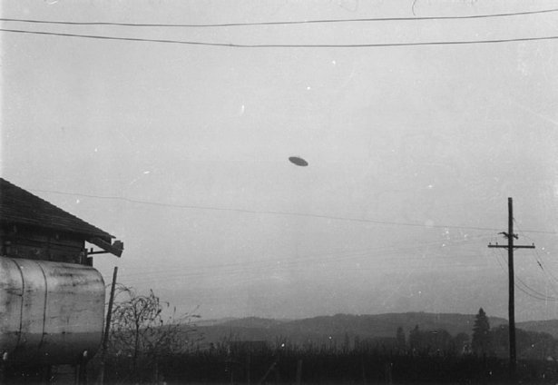

Although these images have become known as the "McMinnville UFO Photographs", Paul and Evelyn Trent's farm was actually just outside Sheridan, Oregon, approximately 21km southwest of McMinnville.

According to astronomer William K. Hartmann's account, on 11 May 1950 at 7:30 p.m., Evelyn Trent was walking back to her house after feeding caged rabbits on her farm. Before reaching the house she claimed to see a slow-moving, metallic disk-shaped object approaching her from the northeast.She yelled for her husband, Paul Trent, who was inside the house; upon leaving the house, he claimed to have also seen the object. After a short time, he went back inside their home to obtain a camera already loaded with film; he said he managed to take two photos of the object before it sped away to the west. Paul Trent's father claimed he briefly viewed the object before it flew away.
However, two days earlier on 8 June, the Trents had given a slightly different version of the incident to the McMinnville newspaper, the Telephone Register. In that version, Evelyn Trent stated "We'd been out in the back yard. Both of us saw the object at the same time. The camera! Paul thought it was in the car but I was sure it was in the house. I was right—and the Kodak was loaded with film..."
In my opinion, yes, it was a hoax. Although E.T. encounters often mess up the witnesses memory--causing their stories to change--I think this was just a hoax, especially because experts have also concluded that the photos are a hoax.